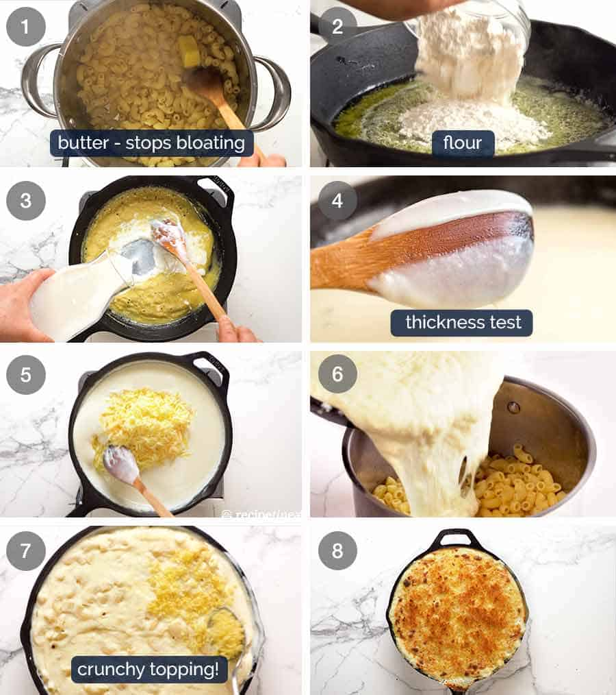

How to make macaroni and cheese
Bring a pot of water to a boil
To make the roux, start by melting butter ina a saucepan over medium heat. Add flour, salt and pepper and stir until smooth
Add cheese and Macaroni

Go back Home